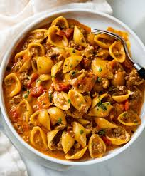

Taco Pasta
This is a delicious recipe for Taco Pasta. It's a fusion of Mexican and Italian
Ingredients:
- 1 lb. ground beef
- 1/2 small onion, chopped
- 2 cloves garlic, minced
- 1 packet taco seasoning
- 1/2 cup water
- 1/2 cup salsa
- 1/2 cup sour cream
- 1/2 cup shredded cheddar cheese
- 8 oz. pasta
- 1/2 cup shredded cheddar cheese
- 1/2 cup shredded Monterey Jack cheese
- 1/4 cup chopped tomatoes
- 1/4 cup chopped green onions
Instructions:
- Preheat oven to 350 degrees F.
- In a large skillet, cook ground beef over medium heat until no longer pink. Drain fat.
- Add onion and garlic and cook until onion is soft.
- Stir in taco seasoning, water, salsa, sour cream, and 1/2 cup cheddar cheese.
- Simmer for 5 minutes.
- Meanwhile, cook pasta according to package directions.
- Drain pasta and add to the meat mixture.
- Stir to combine.
- Transfer to a 9x13-inch baking dish.
- Sprinkle remaining cheddar and Monterey Jack cheese on top.
- Bake for 15-20 minutes or until cheese is melted and bubbly.
- Top with tomatoes and green onions.